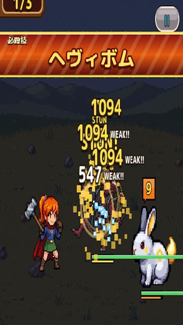

弱点とスタンのしくみ
武器の種類と属性の弱点の倍率、属性の相性、種族の特効スキル、スタンに要る値と 2 回目からのスタンまで、数字でくわしく解説します。 更新：2026-11-23
弱点は 2 種類：武器の種類と属性
敵には、武器の種類の弱点（剣・槍・槌のどれか）と、属性の弱点があります。属性は炎・水・風・光・闇・無の 6 つで、武器にも敵にもついています。
弱点をつくと、ダメージの数字の横に「WEAK!!」と出ます。武器の種類の弱点は白い字、属性の弱点はその属性の色の字なので、どちらが効いたのかがひと目でわかります。両方の弱点をそろえると、効果はかけ算で重なります。
弱点の調べ方は 4 つあります。
- 戦いの中で敵を長押し：吹き出しに敵の名前、「カメカメ・炎属性」のような種族と属性、その下に「弱点 槌 水属性」が出ます。指を離すと消えます
- 「II」→「状況」：敵ごとの HP、攻撃までのターン、スタンのたまり具合と並んで、弱点が文字で出ます
- 出発前の「おすすめ」：その STAGE の敵の弱点に合わせて武器 2 本と盾を選び、「ボスの弱点：槍」のように理由も教えてくれます
- 図鑑：一度出会ったモンスターは図鑑で見返せます。武器の札には「属性 炎 風の敵に2倍」のように、どの敵に強いかが書かれています

倍率の一覧
| 条件 | ダメージ | スタン値 |
|---|---|---|
| 武器の種類が弱点 | 1.5 倍 | 5 倍 |
| 武器の種類が弱点でない | そのまま | 0.4 倍 |
| 属性が有利（例：炎の武器で風の敵） | 2 倍 | そのまま |
| 無属性の武器で無属性の敵 | 1.5 倍 | そのまま |
| 種族特効のスキル（例：ドラゴン斬りでドラゴン） | 3 倍 | 3 倍 |
これらはかけ算で重なります。たとえば、槌が弱点で水属性の敵に、風の槌で攻撃すると 1.5 × 2 ＝ 3 倍です。さらにその敵の種族の特効スキルなら、もう 3 倍で合わせて 9 倍になります。
大事なのは、スタン値に効くのは武器の種類だけということです。属性が有利でもスタンはたまりやすくなりません。一方、武器の種類が弱点かどうかで、スタン値は 5 倍と 0.4 倍、実に 12.5 倍もちがいます。ダメージを増やしたいなら属性、スタンを取りたいなら武器の種類、と覚えておきましょう。
属性の相性
属性は、炎・風・水の 3 つがじゃんけんのような関係で、光と闇はおたがいに強い関係です。
| 敵の属性 | 2 倍になる武器の属性 |
|---|---|
| 風 | 炎 |
| 水 | 風 |
| 炎 | 水 |
| 闇 | 光 |
| 光 | 闇 |
| 無 | 無（1.5 倍） |
無属性の敵は、どの属性の武器でも 2 倍にはなりませんが、無属性の武器で攻撃すると 1.5 倍になり、白い「WEAK!!」が出ます。序盤の無属性の敵には、属性のない武器のほうが効くこともある、というわけです。

種族と特効スキル
敵にはドラゴン・ゴーレム・ゴースト・ケモノなどの種族があります。武器のスキルには、特定の種族に威力とスタンが 3 倍になる「特効」のスキルがあり、その世界の武器にだけつきます。
| 世界 | 種族 → 特効スキル（武器） |
|---|---|
| 地上 | ドラゴン → ドラゴン斬り（剣）・ドラゴン叩き（槌）・ドラゴン突き（槍）／ゴースト → 神聖斬（剣）／ゴブリン → ゴブバスター（剣）／マーメイド → メイドカット（剣）／カメカメ → こうらわり（槌）／おやじ → おやじ叩き（槌）／ゴーレム → ゴレム叩き（槌）／ファビット → ふうせんわり（槍）／カブリモノ → カブリ突き（槍）／ケモノ → 牙獣突（槍） |
| 地底 | スケルトン → 骨斬り（剣）／ムシ → ムシ払い（槍）／モグラ → モグラ叩き（槌） |
| 海底 | クラゲ → クラゲ斬り（剣）／ハンギョ → 銛突き（槍）／コウラ → 甲羅割り（槌） |
| 天空 | テンシ → 堕天斬り（剣）／ハーピー → 羽根削ぎ（槍）／ペガサス → 天馬落とし（槌） |
ドラゴンの特効スキルは ST 3、ほかは ST 2 です。地上のエリアのボスはドラゴンが多いので、ドラゴン斬り・叩き・突きのどれかを持っていると、ボス戦がぐっと楽になります。特効スキルは武器の種類の弱点とも重なるので、たとえば槍が弱点のドラゴンにドラゴン突きを当てると、ダメージは 1.5 × 3 ＝ 4.5 倍、スタン値は 5 × 3 ＝ 15 倍です。
弱点の実例：主なボス
| ボス（場所） | 属性 | 弱い武器 | いちばん効く組み合わせ |
|---|---|---|---|
| 龍騎士マーゴス（アーケディア城） | 無 | 槌 | 無属性の槌 |
| 鈍龍タトルノドン（いにしえの洞窟） | 風 | 槌 | 炎の槌 |
| 海龍オシャルシアス（港町ポトス） | 水 | 槍 | 風の槍 |
| 熱龍マグードワイバル（砂漠の遺跡群） | 炎 | 剣 | 水の剣 |
| 光龍キラノス（砂漠の宮殿） | 光 | 槍 | 闇の槍 |
| 茸龍マタンゴラス（キノコの森） | 風 | 槍 | 炎の槍 |
| 冥龍デスドラゴ（骨の墓場） | 闇 | 槌 | 光の槌 |
| 珊瑚亀サンゴロス（珊瑚の浅瀬） | 水 | 槌 | 風の槌 |
| 天馬王ペガシオン（天馬の牧場） | 光 | 槌 | 闇の槌 |
| 炎翼鳥フェニクシア（太陽の塔） | 炎 | 槍 | 水の槍 |
中ボスとボスで弱い武器がちがうエリアも多くあります（たとえば平原の村は中ボスのワイルドウルフも、ボスの翼龍ドラゴスも槍ですが、雑魚には剣や槌が弱点の敵が混ざります）。メインとサブに別の種類の武器を入れておくと、どの敵にも対応しやすくなります。エリアごとの敵は 地上・地底・海底・天空 の各ページにまとめています。
スタンのしくみ
攻撃を当てると、敵にスタン値がたまっていきます。決まった量までたまると敵はスタンし、頭の上を星が回って 3 ターン動けなくなります。スタン中の敵について覚えておきたいことは 4 つです。
- カウントが減らない（攻撃してこない）
- こちらの攻撃は必ず会心になる（通常 2 倍）
- 1 ヒット当てるごとに ST が 2 回復する
- スタンが解けると、カウントはその敵の決まった数にもどる
スタンに要る値は、敵の大きさで決まります。地上では S の敵が 40、M（中ボスなど）が 80、L（ボス）が 200 です。後の世界ほど武器のスタン値が大きくなるかわりに、要る値も地底では 1.5 倍、海底と天空では 2 倍になります。
たとえばスタン値 20 の武器で地上の敵をたたくと、弱点の種類なら 1 回で 100 たまるので、S や M の敵は 1 発、L のボスでも 2 発でスタンします。弱点でない種類だと 1 回 8 しかたまらず、S の敵で 5 発、L のボスでは 25 発もかかります。ボス戦で弱点の武器が大事なのは、ダメージよりもこのスタンの差が大きいからです。
さらに、次がボスの必殺技（カウントの吹き出しが赤い）のときにスタンさせると、「必殺技を封じた！」と出て、その必殺技が取り消されます。レアキャラは逆にスタンしやすく、要る値がふつうの半分です。
2 回目からのスタンは難しくなる
一度スタンが解けた敵は、次にスタンさせるのに要る値が、最初の値の半分ずつ増えていきます（最初の 3 倍まで）。それに加えて、2 回目からは 1 回の攻撃でたまる量に上限があり、どんなに強い攻撃でも、2 回目のスタンには少なくとも 3 回、3 回目には 5 回、4 回目には 7 回の攻撃が要ります。
また、水神像ミズチガミ・竜宮像オトヒメガミ・風車魔人ミルガスト・星雲の騎士・花の魔人フロラリスのような、行動の間隔が長いパワー型のボスは、スタンに要る値が 5 倍です。こうした相手には、弱点の武器に加えて、スタン 300% のピコンヒットや、特効スキルを重ねて取りにいきます。
スタンを取るタイミングのコツは、「カウントが 1 のとき」か「次が必殺技のとき」にスタンさせることです。攻撃の直前に止めれば、その攻撃をまるごと 3 ターン先へ送れます。カウントにまだ余裕があるときは、ゲージをためるだけにして、必殺技やジャストで ST を整えておきましょう。スタン中に必殺技を撃つ流れは スキルと必殺技のつなぎ方 で解説しています。
弱点に関わる特別な決まり
- バリアチェンジ：一部の強いボスは、戦いの途中で弱点の武器の種類を変えてきます。こうした相手には、弱点でない種類の武器のダメージが 3 分の 1 になります。弱点が変わったら、もう一度長押しして確かめ、メインとサブを使い分けます
- 天空の浮遊：高く飛んだ敵には、剣と槌が「とどかない」と出て当たりません。槍なら届きます。スタンさせるか、その敵が次に攻撃して降りてくるまでは、槍で戦います
- 海底の泡鎧：泡に包まれた敵は、次の 1 回の攻撃を泡で防ぎます。槌なら「泡を割った！」と泡ごと割って当たるので、泡の敵には槌から入るのが近道です
- 海底の擬態：姿を消している間の敵には攻撃が当たらず「MISS」になります。別の敵をねらうか、ためるスキルで準備しておきます
